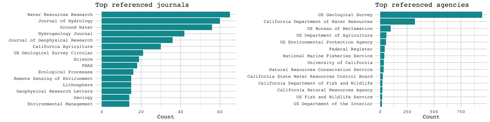
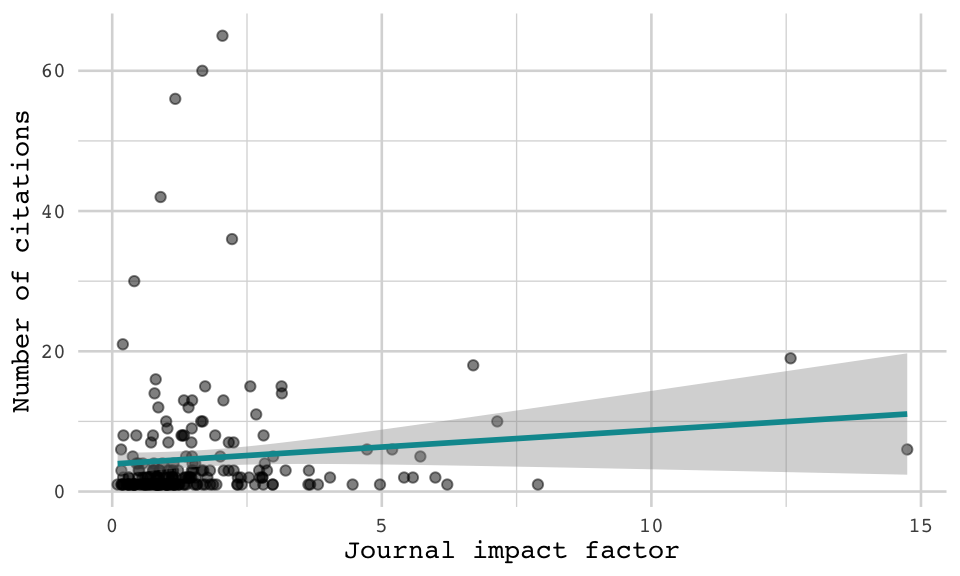
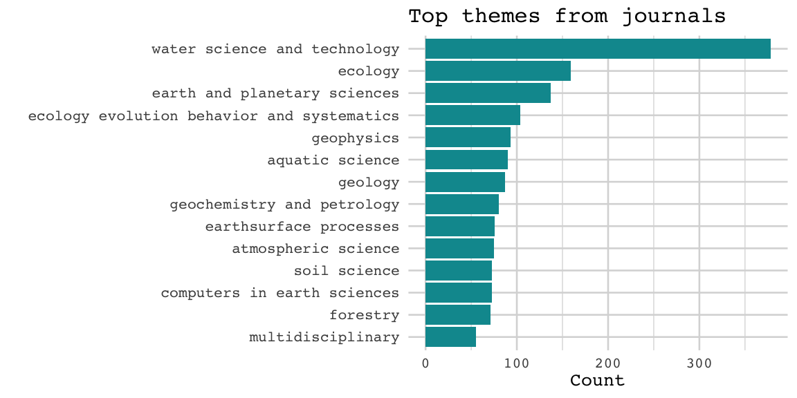

The science informing California’s Groundwater Sustainability Plans
A test case using govscienceuseR
tools
Liza Wood
Tyler A. Scott
Introduction
Aligning scientific supply with policy demand in order to develop evidence-based policy is considered a gold standard by many accounts. The Biden Administration recently reaffirmed that ‘It is the policy of [the Biden] Administration to make evidence-based decisions guided by the best available science and data… Scientific findings should never be distorted or influenced by political considerations’ (Biden, 2021). This sentiment has been echoed by the calls for use-inspired basic research to deliver innovative solutions in service of social and environmental goals (Stokes 2011; Fuglie & Toole 2014).
However, there is broad recognition that promoting evidence-based policymaking at face value overlooks challenges related to knowledge politics and the selective use of science. Namely, policymakers’ emphasis on science as a neutral arbiter masks the politics of generating and communicating scientific knowledge (Sarewitz 2000). Rather than seeing science as independent, supply and demand of science are politically linked (Sarewitz & Pielke 2007). As such, research to support evidence-based policymaking requires intentional engagement by scientists to not only reduce uncertainty through high-quality research, but also reduce ambiguity through strategic communication and problem framing (Cairney 2016). Emphasis on communication is echoed by literature on boundary spanners that can broker between the scientific and policy communities (Guston 2001).
Recognizing the complex interplay of science and policymaking, what methods can we use to better understand these dynamics? Through surveys and interviews of public servants, studies find wide variation in how policy makers interact with scientific information (Newman et al. 2016), and highlight that internal governmental reports and personal networks are among the most popular sources of information (Piczak et al. 2022). These findings have been supported and detailed through a handful of bibliometric analyses of policy documents. Desmaris and Herd (2014) evaluated 102 Regulatory Impact Assessments, confirming a majority of governmental citations and describing the prevalence of disciplines like economics, environmental science, and public health from high-impact journals across 1,378 scholarly citations. Koontz (2022) finds similar trends when analyzing 12 salmon recovery plans, categorizing 1,104 references from various sources (academic, governmental, organizational, etc.) and expanding on how science is used to support causal arguments.
The insights from bibliometric analyses of policy documents lay an
important foundation for systematically quantifying the evidence used to
support policy. However, manually extracting and indexing references can
be a tedious task. Unlike ‘science of science’ research, where
bibliometric methods are made easier through publishing norms of
citations and indexing (e.g. DOIs, ORCIds, etc.), science of policy
research is less systematic. Policy documents do not always follow
consistent formatting or citations norms, and references outside of
non-scholarly articles (which are the majority of references) are not
systematically indexed. However, developments in computational tools for
reading and analyzing large texts create an opportunity for automating
some of the more tedious phases of bibliometry on policy documents. This
paper presents a set of tools for aiding bibliometic analysis of policy
documents, govscienceuseR, which we hope will support
policy process researchers in quantifying and unpacking the complex
interplay of science and policymaking.
Method
The govscienceuseR tools provide a computational
approach for indexing and summarizing references from policy documents.
This is vignette walking through the steps of the R packages in the
govscienceuseR tool set: referenceExtract,
referenceClassify, indexBuild, and
referenceSearch. Together, these four packages allow
researchers to go from PDF documents to a data frame of indexed
citations in only a handful of steps in the R coding language (steps
mapped below). The goal of these tools is to allow researchers working
with various types of policy documents to analyze citations using a
systematic and reproducible approach.

Case: Groundwater Sustainability Plans
California’s Sustainable Groundwater Management Act (SGMA) of 2014 sets out a framework for local Groundwater Sustainability Agencies to work towards sustainable management of their groundwater basins. Agencies are required to outline their strategies in Groundwater Sustainability Plans (GSPs) – documents reviewed by the Department of Water Resources (DWR) to ensure that Agency strategies comply with SGMA, the GSP regulations, and achieve groundwater sustainability for the basin (DWR no date). Among the criteria for plan evaluation, the California Code specifies: “When evaluating whether a Plan is likely to achieve the sustainability goal for the basin, the Department shall consider… Whether the assumptions, criteria, findings, and objectives, including the sustainability goal… are reasonable and supported by the best available information and best available science” (23 CCR § 355.4).
There is a clear mandate that GSP documents use scientific evidence to support their strategies for groundwater sustainability, but defining and measuring sustainability is no simple feat (Kuhlman & Farrington 2010). DWR sets out six sustainability indicators, whereby the occurrence of any indicator would be an undesirable result: lowering groundwater levels, reduction of storage, seawater intrusion, degraded quality, land subsidence, and surface water depletion. However, it is the Agencies that set measurable objectives and minimum thresholds for these indicators by considering all ‘beneficial users and uses’ for their basin (Austin, 2019). Beneficial uses include ‘domestic, municipal, agricultural, and industrial supply; power generation; recreation; aesthetic enjoyment; navigation; and preservation and enhancement of fish, wildlife, and other aquatic resources or preserves’ (California Water Plan glossary 2018).
Facing the challenge of managing groundwater resources across a wide
array of users and interests, we ask: How is science used to
inform the multiple dimensions of groundwater sustainability?
Analyses of the SGMA collaborative process and GSP drafts have already
shown that achieving groundwater sustainability while supporting
all beneficial uses is unlikely. * Some beneficial uses are
preferenced over others: domestic well depths above minimum threshold
(Bostic et al. 2020. Sustainable for whom?)
* Representation challenges (Dobbin)
To build on this existing research, we turn to the scientific evidence used in GSPs to tell us something about how agencies are defining sustainability. (and as a result, preferencing some groundwater users over others?). We trial the govscienceuseR tool kit on 114 GSPs, published between X and X year…
Getting started
Installations
To begin, download all four packages from the govscienceuseR GitHub page:
devtools::install_github("govscienceuseR/referenceExtract")
devtools::install_github("govscienceuseR/referenceClassify")
devtools::install_github("govscienceuseR/referenceBuild")
devtools::install_github("govscienceuseR/citationSearch")Then load these and dependent packages into library. [Note:
All of the dependent packages required should be imported when we load
in these packages, but they currently aren’t – still strugglin with
package imports when function-building]. You may be prompted to
install some of the dependent packages if you do not already have them,
such as keras.
library(referenceExtract)
library(referenceClassify)
library(referenceBuild)
library(citationSearch)
packs = c('data.table', 'dplyr', 'stringr', 'keras', 'tensorflow',
'tidyr', 'purrr')
sapply(packs, require, character.only = T)Outside of R, the referenceSearch package also requires
installation and running of Solr.
This software should be downloaded to a known location on your
computer.
Data
The documents of interest for this paper are California’s Groundwater Sustainability Plans. These documents are available publicly to download from Box. To follow along with this tutorial, download the files to a file that will be considered your document directory. My document directory is specified below. There are 114 plans which total over 160,000 pages.
doc_directory <- "~/Box/reference_classifier/documents_gsp/"1. referenceExtract
The referenceExtract package from govscienceuseR is
designed to take unstructured PDF documents, feed them through the anystyle.io citation extraction
software, and return tagged citation data in a tabular format.
reference_extract()
The first step of extracting references is to input PDF documents
into the reference_extract() function. This function reads
in every PDF in the document directory (doc_dir), and runs them through
anystyle.io. Anystyle extracts probable citations and exports them to
the reference directory (ref_dir) as JSON files. Depending on the number
and size of files, this can take some time. For example, these 114
documents took over an hour to extract.
# Extract probable citations from PDF documents and convert them to .json files
ref_directory <- "data/ref_dir"
reference_extract(doc_dir = doc_directory,
ref_dir = ref_directory,
layout = "none")reference_compile()
Next, the reference_compile() function transforms the
JSON files into tabular data and compiles them all in one data table,
adding the file name as an identifier.
# Compile json files into a singular tabular data table
dt <- reference_compile(ref_directory)After these first two steps we can take a look at our probable citations according to the Anystyle software. Initially, there are 26528 probable citations across these 114 documents.
It is noticeable above that the data provided by Anystyle has its challenges for further analysis. The first is a related to data structure: authors are nested into matrices, some rows (such as the date) have multiple listed values, etc., all of which make the data hard to analyze. For example, here is what seems to be two probable citations combined into one observation:
unnest(dt[204, c(2,3)])## # A tibble: 3 × 2
## date title
## <chr> <chr>
## 1 2017 Long‐Term Socio‐Economic Forecasts by County: Kings County
## 2 2015 Progress Report: Subsidence in the Central Valley, California. For Depa…
## 3 2009 Ground‐water availability in California’s Central ValleyThe second challenge is related to quality: many of the probable citations are not sensible. The Anystyle software seems sensitive to multiple formats like numbers and short-form sentences, such as addresses, resulting in false positive identification of references. For example, here is an address listed as a probable citation from our data:
unlist(dt[148, c(1,3,5)])## author.family
## "When"
## author.given
## "Firebaugh"
## title
## "5:00 - 7:00 PM Firebaugh Middle School MPR 1600 16th Street, Firebaugh, CA Los Banos – Wednesday"
## container-title1
## "PM College Greens Building 1815 Scripps Drive"
## container-title2
## "PM Hammon Senior Center 1033 W. Las Palmas Avenue"
## container-title3
## "Monday"reference_clean()
To try to address the challenges in these probable citations, the
reference_clean() function goes through a series of steps.
For each column the function unlists the data and filters out unlikely
candidates for that column. For instance, if a number listed in the date
column does not match any reasonable date format or expectation, it is
removed. If a string in the URL column actually resembles a DOI, it is
moved to that column. And so on. Furthermore, if there seem to be
multiple citations listed in one row that can be broken apart in
parallel across all of the columns, we unnest these rows. (Note:
depending on the size of the files this function may take some time.
Cleaning these 26528 citations takes about 18 minutes).
# Unnests list structures into tabular data and filters out low probability refs
dt <- reference_clean(dt)This cleaning process has changed probable citations now a bit. Some of the probable citations have been unnested (and therefore expanded) while others have been removed, leaving us with 14423 probable citations. Examples of these probable citations are below:
2. referenceClassify
The referenceClassify package is designed to take a data
frame of tabular, tagged citation data (author, year, container,
publisher, doi, etc), look for exact matches between those tags and
various high-level indices (mainly journal and agency names), and begin
to classify probable citations into these high-level categories. These
indices are 1:) an index of academic journals from the sjr
package relying on the Scimago
database, 2) an index of academic conference papers/proceedings also
from the Scimago database, 3) and an index of US state and federal
agencies, curated by the package authors. All three of these indices are
built into this package and can be accessed with
data(scimago.j) for journals, data(scimago.c)
for conferences, and data(agencies) for agencies.
prepared_by() and journal_disambig()
[Note: Should these be moved to the cleaning function, or to the other package?]
Before classifying our probable references, we can further clean and
refine these potential citations with the prepared_by()
function, which removes commonly-seen lead-ins to references (‘prepared
for/by’, etc.) to improve exact matching.
dt <- prepared_by(dt, x = 'container', y = 'author', z = 'publisher')Additionally, we disambiguate the journals with the
journal_disambig() function, which references indices of
common journal abbreviations and through manual cleaning of journals
referenced in transportation documents.
dt$container <- journal_disambig(dt$container)regex_classify()
Now with probable references as ‘clean’ as possible, we use regular
expressions to classify our data based on exact matches using the
regex_classify() function. This function does two things.
First it looks across all of the columns for exact matches to our
indices, and if there is an exact match, it pulls out that value into a
‘input’ column. If there is no exact match, the value in the input
column will be selected in the following order of preference: doi,
container, publisher, title, author. Second, based on the matches the
function will assign the potential citation into one of four classes:
journal, agency, conference, or none. If none of the potential
citations’ data is an exact match to any of the indices, the
classification is NA.
# Extract most descriptive 'input' and look for exact match to index
dt <- regex_classify(dt, 'container')Based on these classifications, we can see the counts of exact matches, and which ones have not been classified.
| Agency | Conference | Journal | Not a citation | Unclassified |
|---|---|---|---|---|
| 1867 | 3 | 997 | 146 | 10899 |
keras_classify()
Next we want to classify the probable references that are not exact
matches to any of our indices. To do this, we use
keras_classify() input our probable into a neural network
trained to predict the reference class. To train this model, we used
data from Environmental Impact Statements, classified through both
manual classification and the semi-automated regex classification
explained above.
# Use the descriptive 'input' to probabilistically identify the reference class
## Note: Need to set this wd right now because I can't actually get the model object to save within the package itself
setwd("~/Documents/Davis/R-Projects/referenceClassify/")
# Something is wrong with the auto_input
predictions <- keras_classify(dt, probability = .85,
'container', auto_input = F,
'training_input')
dt <- cbind(dt, select(predictions, predict_class))Because we ran this model on the whole data frame, we can compare our regex classification with the Keras classifications to get a sense of the model performance.
| Incorrect | Match | Classified as unsure |
|---|---|---|
| 30 | 2801 | 182 |
These results, altogether, suggest that the Keras model is 93% accurate in its prediction of the citations we are able to do exact matching for. Now, let’s unify the classification columns and have a look at the total for each estimated grouping.
| Agency | Conference | Not a citation | Journal | Unsure |
|---|---|---|---|---|
| 3675 | 5 | 3163 | 1856 | 5213 |
And we’ll tidy up these data by filtering out the citations classificied to ‘delete’ (the false positives) in preparation for our indexing in the next step.
dt <- dt %>%
select(-c(predict_class, method_comparison)) %>%
filter(class != "delete")Interim check in: Journals and agencies from exact matching
So far, we’ve identified exact matches to our high-level indices (journal, agency, conference) and then used machine learning to classify citations that are not exact matches so that we can begin to figure out their source. At this interim stage, we can take a look at the high-level classifications across citations, and the journals and agencies for which we’ve found exact matches.
First, let’s take a look at the high-level matches. A reference list was required by DWR for GSPs, and indeed we see that all 114 of the documents have references that we can identify as either a scholarly journal or agency. Based on our tool’s probabilistic tags, it looks like the number of references ranges from 1 to 128, with 24 being the average number of classified references. That average differs between references classes, whereby the average number of journal references is 16 and the average number of agency references is twice that, at 32. In total, there are 1,865 journal references and 3,675 agency references.
Of these references, we display the top 15 references journals and agencies identified by our exact matching strategies. At a glance, we see a strong representation of geological, hydrological, and agricultural science…

Regarding the impact factor of academic references…
dt_journals %>%
group_by(journal_title, sjr_avg) %>%
count() %>%
ungroup() %>%
ggplot(aes(x = sjr_avg, y = n)) +
geom_point(alpha = .5) +
geom_smooth(method = 'lm', color = "#03989e") +
labs(x = 'Journal impact factor', y = 'Number of citations') +
theme_govuser(base_size = 10)
3. indexBuild
Now that we have a general sense of what kind of reference types are
represented within the probable citations, the next step is to try to
index these reference exactly. The indexBuild package is
designed to query the openAlex
API, an open access catalog of research, in order to build a
personalized catalog relevant to the field of research. This step is
optional for the govscienceuseR workflow, as the tool kit
provides a default index with the top X research categories over the
past X years [Note: need to build some default index].
However, building an index for a given research project will likely
increase the matching abilities of the tool.
Identify index concepts
To build an index, we first need to define the scope. openAlex allows indices to be built based on five different types of entities: authors, institutions, venues, concepts, and works. We choose to build our index based on concepts, as this casts the widest and most inclusive net. We use the known journal names we already have in our data to define the concepts that we want in build our index on. To identify these concepts we use journals’ disciplinary category metadata from the Scimago database.
themes <- dt_journals %>%
select(sourceid, journal_title, cat1:cat13) %>%
pivot_longer(cols = cat1:cat13,
names_to = "number",
values_to = "cat") %>%
filter(!is.na(cat)) %>%
group_by(cat) %>%
count() %>%
arrange(n)Across the journals identified in our references there are 92 disciplinary categories and the top categories are displayed below.
 [Also consider taking keywords? This is mainly because even though ‘water science and technology’ is the main theme, this doesn’t match to an openAlex concept, and so I didn’t want to lose out on concepts like ‘water’. But then opens up a whole long list of things I’m not interested in, and because this is a massive list of concepts to build from I’d like to figure out a way to scale it back].
personal_stop <- c("science", "theory", "apply", "theoretical", "information",
"uncertainty", "system", "plan", "model", "change")
keywords <- themes %>%
tidytext::unnest_tokens(word, cat) %>%
dplyr::filter(!word %in% tidytext::stop_words$word &
!word %in% personal_stop) %>%
mutate(word = textstem::lemmatize_words(word)) %>%
unique()Let’s use these themes and keywords to inform our index creation.
queryConcepts()
The queryConcepts() function allows us to enter themes
into openAlex API and find a number of associated research concepts. I
input the 192 Scimago themes and keywords into the
concept_string argument to query the API.
[Note: I think we should build in sleep time to this function because if you try to input multiple concepts it is rejected]
query_slowly <- function(x){
index <- queryConcepts(concept_string = x,
per_page = 50)
return(index)
Sys.sleep(1)
}
key_themes <- unique(c(themes$cat, keywords$word))
index <- lapply(key_themes, query_slowly)
# For some reason there was a bit of missing data for particular concepts
index[[66]]$description <- ''
indexdf <- do.call('rbind', index) %>% unique()From the 192 themes, openAlex identifies 3982 associated concepts, representing 898507778 works.
[Note: This is not a sustainable number of works to index, so… need to ditch this or limit it severely]
To focus our index, we select only the concepts that are associated with the themes at ‘level 0’ – that is, the highest match of relevance (?). This reduces our concepts down to 15, high-level concepts, representing 444886007 works.
A summary of these concepts is below:
extractWorks()
Using the concept page ID from the previous function, the
extractWorks() function extracts the associated works from
the openAlex API and saves them as compressed .json.gz files.
for(j in 2000:2020){
sapply(indexdf$id, FUN = function(x){
extractWorks(mailto = "belwood@ucdavis.edu",
concept_page = x,
dest_file = paste0("~/Box/govscienceuseR/openalex_index_gsp/",
stringr::str_extract(x,'[A-Za-z0-9]+$'),
"_2000_2020", ".json.gz"),
per_page = 200, # must be between 1 and 200
to_date = j,
from_date = j,
sleep_time = 0.5)
})
}The .json.gz files are stored in the dest_file
specified.
works2dt()
[Note: From here on we are using only a sample of the index, since it takes time to extract]. Intermin index has over 3 million works. This conversion from json concepts to works took 12.5 hours.
jsons <- list.files("~/Box/govscienceuseR/openalex_index_gsp/", full.names = T)
# Anything that is 23 is empty
jsons <- jsons[file.size(jsons) > 23]
t1 <- Sys.time()
records <- lapply(jsons, works2dt)
recordsdf <- do.call("rbind", records)
t2 <- Sys.time()We’ll also want to make sure our record data frame has the column names that are compatible with the next stage, so let’s go ahead and rename them appropriately.
colnames(recordsdf)[c(1,2,3,5,7,8,10,12)] <- c("source", "title", "doi",
"year", "miscid",
"journal_title",
"publisher", "authors")We’ve generated quite a wide database, including [draft number based on only a fraction of the concepts of interest: 3315077] records in our index. However, this likely leaves out edge cases, and we are developing ways to develop broader indices.
4. referenceSearch
Now we have our probable citations and their groupings and we have an
index in which to look them up. The final step, supported by the
referenceSearch package, is to probabilistically match the
citation outputs from our GSP documents to the index of journal
citations that we just built.
create_queries()
Let’s isolate our probable citations that would likely map onto our index of academic reference.
dt_solr <- dt %>%
filter(class == "journal") %>%
select(title, author, year, publisher, container,
doi) %>%
rename("journal_title" = container,
"authors" = author) %>%
mutate(year = as.numeric(year))
queries <- create_queries(dt_solr)index_records()
Once our probable references have been converted into queries, we
will index them with index_records(). We input the records
data frame we generated from the index building and assign it a
collection name.
This is the stage of the process where we also use the Solr software.
To start a Solr instance, in the command line/terminal, navigate to your
solr download, then start a cloud instance with the
start -c command. On my computer, Solr is located in my
Applications, so my Terminal commands looks like this:
~/Applications/solr-9.1.0/bin/solr start -c## *** [WARN] *** Your open file limit is currently 10496.
## It should be set to 65000 to avoid operational disruption.
## If you no longer wish to see this warning, set SOLR_ULIMIT_CHECKS to false in your profile or solr.in.sh
## *** [WARN] *** Your Max Processes Limit is currently 2784.
## It should be set to 65000 to avoid operational disruption.
## If you no longer wish to see this warning, set SOLR_ULIMIT_CHECKS to false in your profile or solr.in.sh
## Waiting up to 180 seconds to see Solr running on port 8983 [|] [/] [-] [\] [|] [/] [-] [\] [|] [/] [-] [\] [|]
## Started Solr server on port 8983 (pid=6559). Happy searching!
##
## **CHALLENGES For index_records, I get this error: Error in collapse(tmp, inner = FALSE, indent = indent) : R character strings are limited to 2^31-1 bytes
Is it too big?
Also the overwrite = T argument does not seem to activate anything, so I have now written gsp_index, gsp_index2, gsp_index3, ugh**
index_records(recordsdf, collection_name = "gsp_index3", overwrite = T)Because the index won’t build, I tried to see what would happen with just the demo data, but I also get an error:
For search_collection, I get this error: ” Error: 400 - undefined field year ”
results <- search_collection(q = queries[3],
collection_name = "WOS_demo",
topn = 3)So just saving this until later.
results = list()
count = 1
for (q in queries[1:10]) {
res = search_collection(q, collection_name = "gsp_index")
res$id = count
res$q = q
results[[count]] = res
count = count + 1
}
results_df = do.call(dplyr::bind_rows, results)~/Applications/solr-9.1.0/bin/solr stop## Sending stop command to Solr running on port 8983 ... waiting up to 180 seconds to allow Jetty process 6559 to stop gracefully.
## [|] [/] [-] [\]